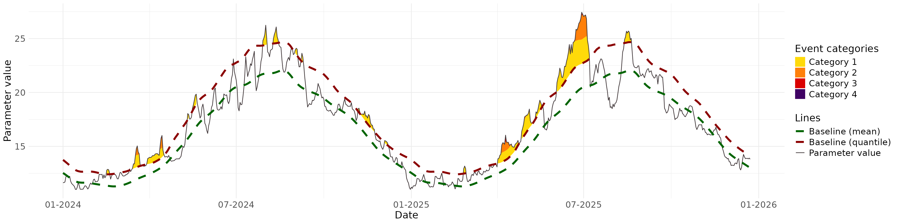
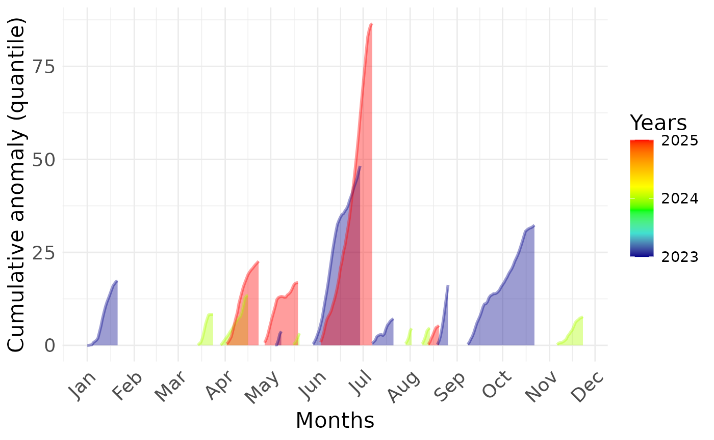
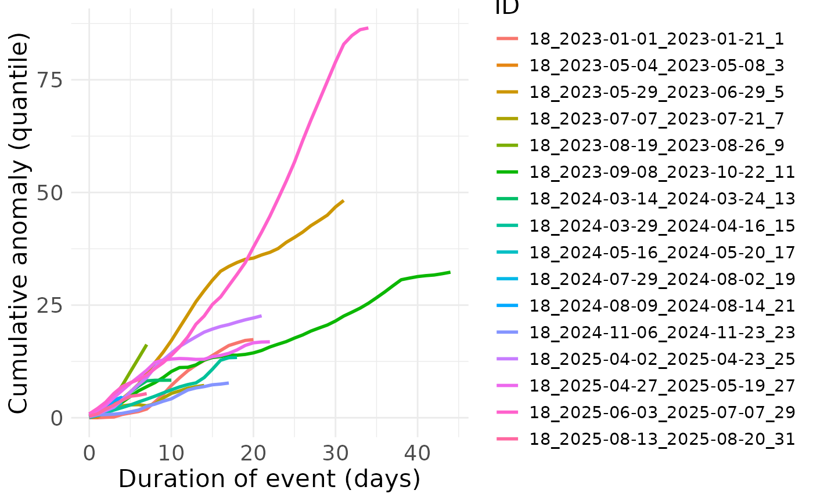

vignettes/g_calc_metrics_point.Rmd
g_calc_metrics_point.RmdCompute daily metrics such as anomaly to the baseline, event category (according Hobday et al. 2018), onset_rate, offset_rate, variance of the parameter, etc.
Events_corrected: Is the list of data tables
produced by: bee_calc_true_event (the second element of the output). For
each pixel, it contains a data.table with dates in the rows and a column
indicating whether it is a day belonging to a heatwave (1) or not
(0).
YourSpatraster: is the spatraster with the values of
the studded parameter, through time and space.
GPS: is a data frame containing the positions for which
you want to compute metrics. It must contain columns labelled ‘x’ and
‘y’, which should contain longitudes and latitudes, respectively.
start_date: First day on which you want to start
computing metrics.
end_date: Last day on which you want to start computing
metrics.
baseline_qt: Spatraster of the 90th percentile baseline
(or the 10th percentile baseline)
baseline_mean: Spatraster of the mean value
baseline.
time_lapse_vector: a vector of time laps on which to
compute mean evolution rate and variance of the studdied
parameter.
group_by_event: Whether you want an output summarise by
extreme event or not. If not, you just get daily metrics.
You will receive a warning if :
library(BioExtremeEvent)
file_name_1 <- system.file(file.path("extdata",
"copernicus_data_celsius.tiff"),
package = "BioExtremeEvent")
copernicus_data_celsius <- terra::rast(file_name_1)
file_name_2 <- system.file(file.path("extdata",
"binarized_corrected_df.rds"),
package = "BioExtremeEvent")
binarized_corrected_df <- readRDS(file_name_2)
file_name_3 <- system.file(file.path("extdata",
"baseline_qt90_smth_15.tiff"),
package = "BioExtremeEvent")
baseline_qt90_smth_15 <- terra::rast(file_name_3)
file_name_4 <- system.file(file.path("extdata",
"baseline_mean_smth_15.tiff"),
package = "BioExtremeEvent")
baseline_mean_smth_15 <- terra::rast(file_name_4)
GPS <- data.frame(x = c(3.6883,4.4268), # Sète, Saintes-Marie-de-la-Mer
y = c(43.3786,43.4279))This is the recommanded action when exploring data, summarising by extreme event is possible afterward using BEE.data.merge() (to merge sevral types of metrics) and BEE.data.summarise() (to summarise metrics per extreme event or over different time period).
metrics_points_day <- BEE.calc.metrics_point(
Events_corrected = binarized_corrected_df,
YourSpatraster = copernicus_data_celsius,
GPS = GPS,
start_date = NULL,
end_date = NULL,
time_lapse_vector = NULL,
baseline_qt = baseline_qt90_smth_15,
baseline_mean = baseline_mean_smth_15,
group_by_event = FALSE
)## You didn't specify a begining date and a ending date (see argument
## 'start_date' and 'end_date'), the first date and last date in your time
## YourSpatraster will be used.
metrics_points_ee <- BEE.calc.metrics_point(
Events_corrected = binarized_corrected_df,
YourSpatraster = copernicus_data_celsius,
GPS = GPS,
start_date = NULL,
end_date = NULL,
time_lapse_vector = NULL,
baseline_qt = baseline_qt90_smth_15,
baseline_mean = baseline_mean_smth_15,
group_by_event = TRUE
)## You didn't specify a begining date and a ending date (see argument
## 'start_date' and 'end_date'), the first date and last date in your time
## YourSpatraster will be used.Use the ‘time_lapse_vector’ argument. You can provide a single number or a vector of different time windows to be computed. This option is also available in BEE.data.summarise(), which is why we recommend doing data exploration with “time_lapse_vector” set to NULL and “group_by_event” set to FALSE and to later use BEE.data.merge() and BEE.data.summarise().
metrics_point_lag <- BEE.calc.metrics_point(
Events_corrected = binarized_corrected_df,
YourSpatraster = copernicus_data_celsius,
GPS = GPS,
start_date = NULL,
end_date = NULL,
time_lapse_vector = c(3,5,7), # The moving time windows are 3,5 and 7 days long.
baseline_qt = baseline_qt90_smth_15,
baseline_mean = baseline_mean_smth_15,
group_by_event = FALSE # Be carefull to set this argument on FALSE
)## You didn't specify a begining date and a ending date (see argument
## 'start_date' and 'end_date'), the first date and last date in your time
## YourSpatraster will be used.To do so, you need to provide a “GPS” argument containing all the pixel positions in YourSpatraster. This considerably increases computation time, so we advise against providing GPS positions that refer to pixels that are always NA.
Get all the pixel coordinates:
# vector of all the pixels ids:
pixels_ids <- seq(1,terra::ncell(copernicus_data_celsius),1)
# Withdraw the ids of pixels that are always NA, for which you never have a value for the studied parameter:
always_NA_rast <- terra::app(copernicus_data_celsius, function(x) all(is.na(x)))
not_NA <- which(terra::values(always_NA_rast)==0)
coords <- terra::xyFromCell(always_NA_rast, not_NA) # use just one layer of the spatraster
coords <- as.data.frame(coords)Apply function:
metrics_points_day_all_pix <- BEE.calc.metrics_point(
Events_corrected = binarized_corrected_df,
YourSpatraster = copernicus_data_celsius,
GPS = coords,
start_date = NULL,
end_date = NULL,
time_lapse_vector = NULL,
baseline_qt = baseline_qt90_smth_15,
baseline_mean = baseline_mean_smth_15,
group_by_event = FALSE
)## You didn't specify a begining date and a ending date (see argument
## 'start_date' and 'end_date'), the first date and last date in your time
## YourSpatraster will be used.Outputs are list of dataframe (on dataframe per pixel in GPS), list can be saved in .rds :
saveRDS(metrics_points_day, file = "your_path/data/metrics_points_day.rds")
# get metrics for on GPS position
one_place <- metrics_points_day[[2]]
#plot
BEE.plot.categories(metric_point_df = one_place,
color_theme = "red",
start_date = "2024-01-01",
end_date = NULL,
# facultative arguments to customise graph:
... = ggplot2::theme(
axis.text.x = ggplot2::element_text(size = 14),
axis.text.y = ggplot2::element_text(size = 14),
axis.title.x = ggplot2::element_text(size = 16),
axis.title.y = ggplot2::element_text(size = 16),
legend.title = ggplot2::element_text(size = 16),
legend.text = ggplot2::element_text(size = 14)
))
# get metrics for on GPS position
one_place <- metrics_points_day[[2]]
#plot
BEE.plot.cumulative_anomaly(metric_point_df = one_place,
start_date = NULL,
end_date = NULL,
# facultative arguments to customise graph:
... = ggplot2::theme(
axis.text.x = ggplot2::element_text(size = 14),
axis.text.y = ggplot2::element_text(size = 14),
axis.title.x = ggplot2::element_text(size = 16),
axis.title.y = ggplot2::element_text(size = 16),
legend.title = ggplot2::element_text(size = 16),
legend.text = ggplot2::element_text(size = 14)
))## Warning: Using `size` aesthetic for lines was deprecated in ggplot2 3.4.0.
## ℹ Please use `linewidth` instead.
## ℹ The deprecated feature was likely used in the BioExtremeEvent package.
## Please report the issue at
## <https://github.com/VicoMarbec/BioExtremeEvent/issues>.
## This warning is displayed once per session.
## Call `lifecycle::last_lifecycle_warnings()` to see where this warning was
## generated.